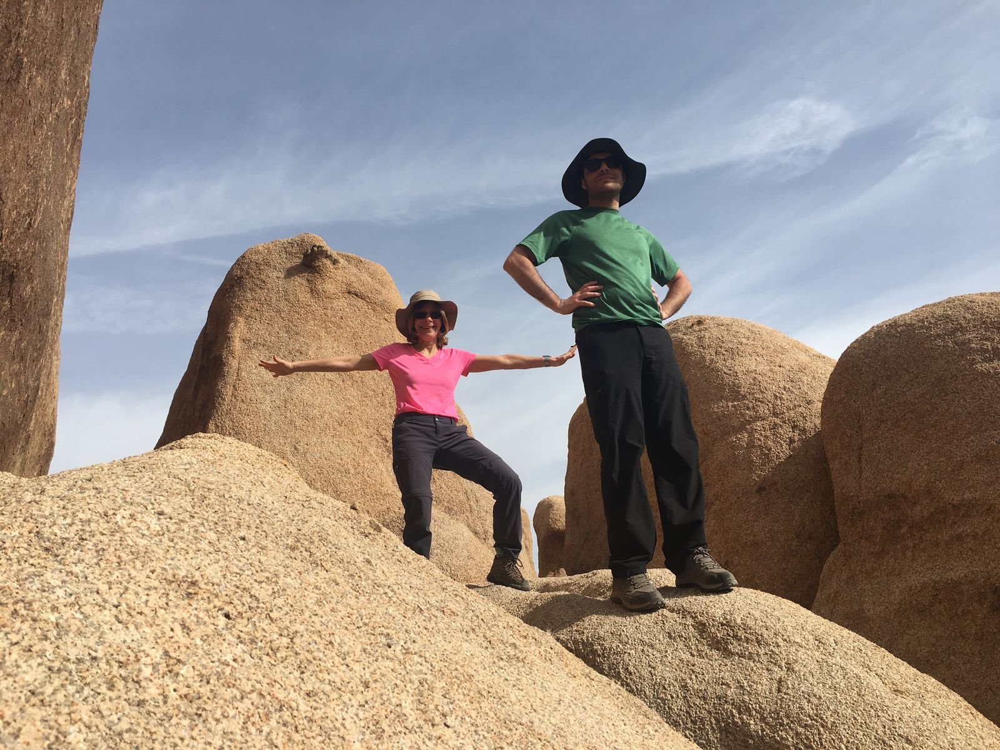
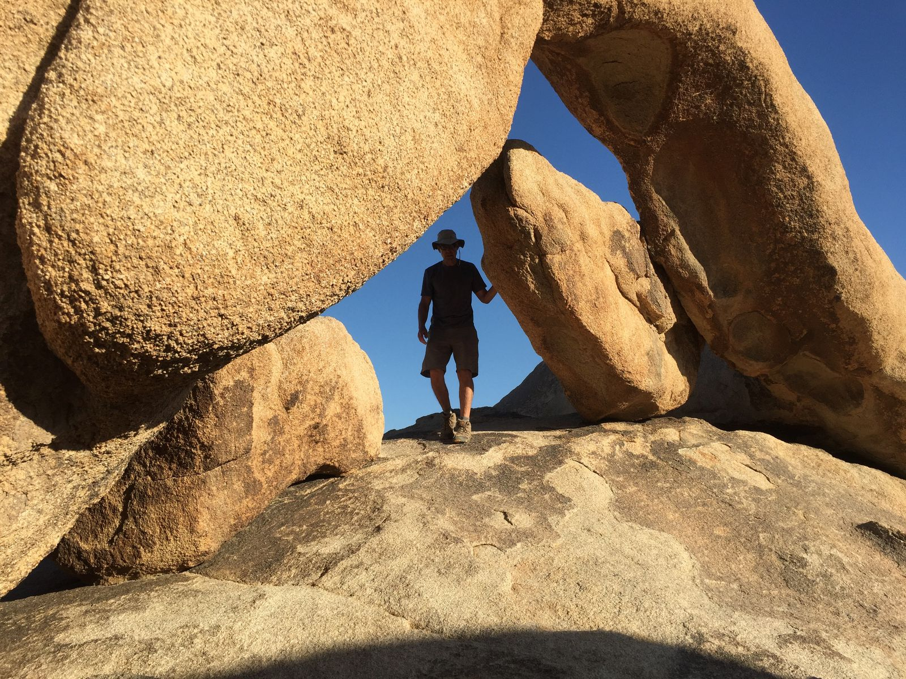
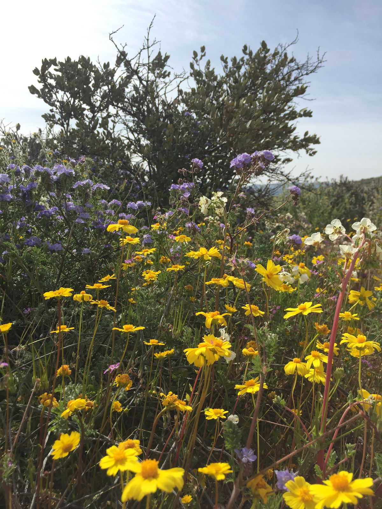
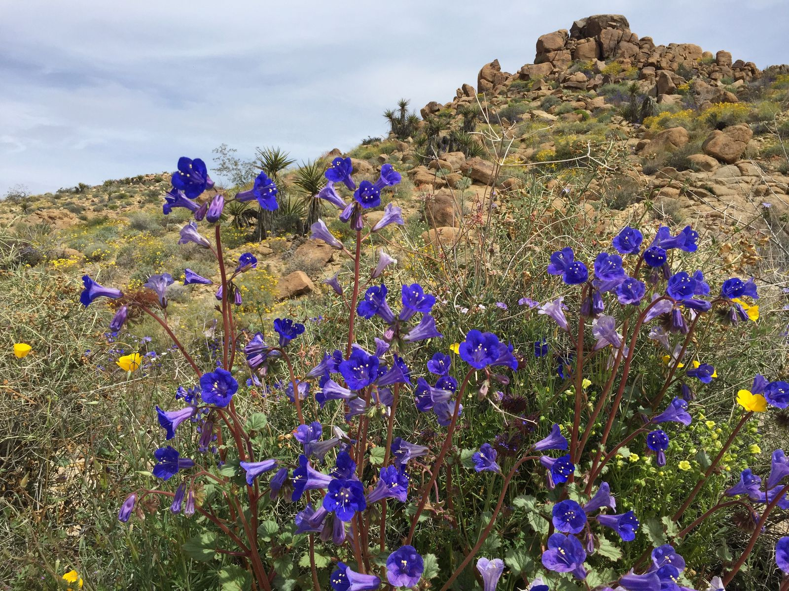
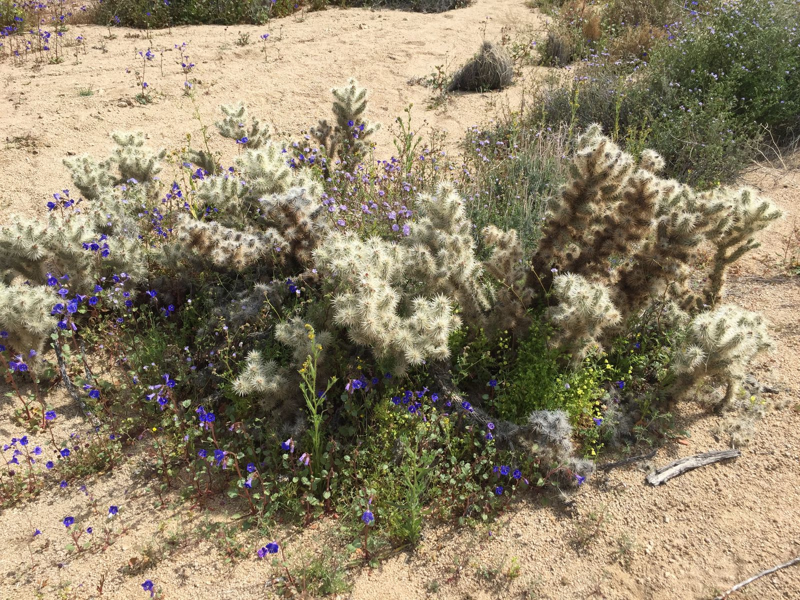
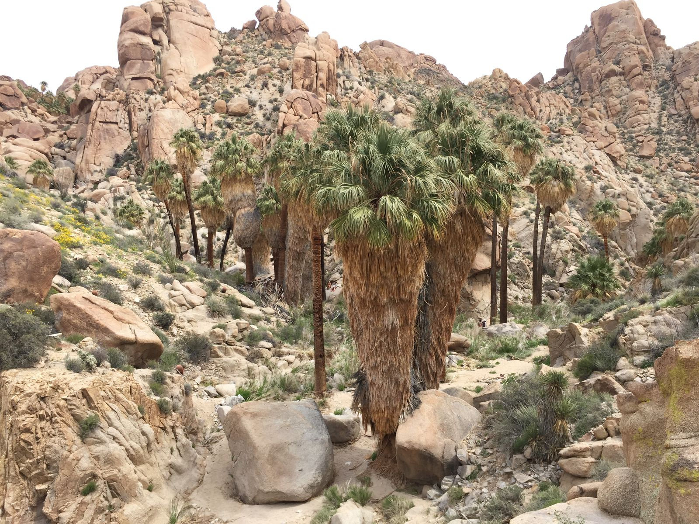
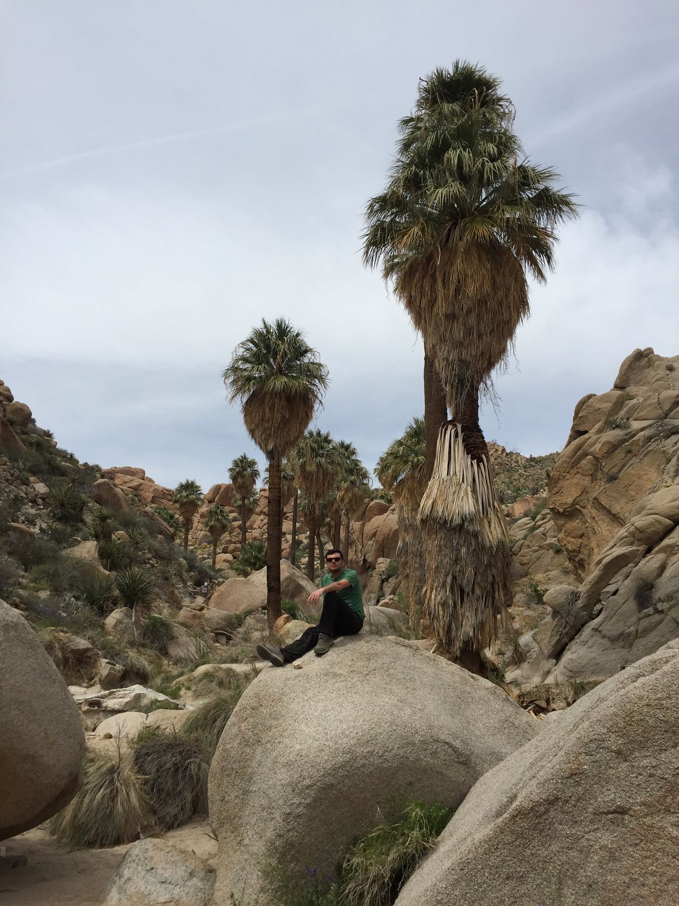
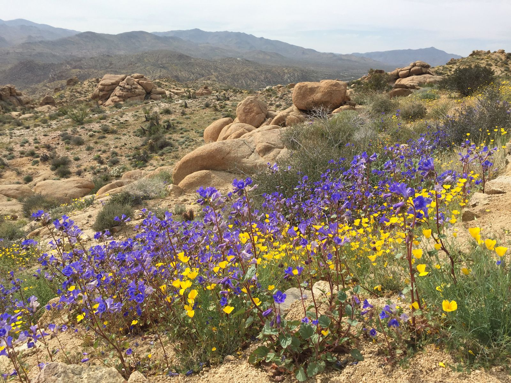

Cottonwood Spring
The last day in Joshua Tree National Park was spent in the Cottonwood area. Wanting a bit more of climbing boulders, we started our day by returning to Arch Rock. My body was sore from the previous two days of hiking, but I was ready to do some scrambling up and down these giant stones before embarking on the day's hike.


The Cottonwood Spring area is located in the Colorado desert rather then the Mojave desert, where we spent the previous two days. Because of a different elevation, we found different plans. In this case, it was tons and tons of colorful flowers. David, uncharacteristically, was the slowest of the three of us because he stopped so many times to take pictures of blooming flowers.
I already mentioned the turtle, snake, hare, and lizards in a previous posts, so I will focus on the plants here. On our one hike of the day, Lost Palms Oasis Trail ("strenuous", 7.5 miles), we encountered several different landscapes. The first was colorful and full of plants.



The flowers began to recede as we entered into a more cavernous and sandy landscape, before it opened up to the Lost Palms Oasis—a canyon with the highest density of palms in Joshua Tree. Getting down the canyon was rather steep and treacherous, but getting back up was pretty easy. At the bottom I found several pools of water. It was pretty easy to wander about even without any trails down there.


On the way back, we took a short detour to Mastodon Peak ("moderate"), adding about 1.4 miles to the hike. The Cottonwood Spring area was different enough from the other two areas that it was certainly worth the visit for the day. It, surprisingly, was the most crowded trail, though there still weren't too many people.
